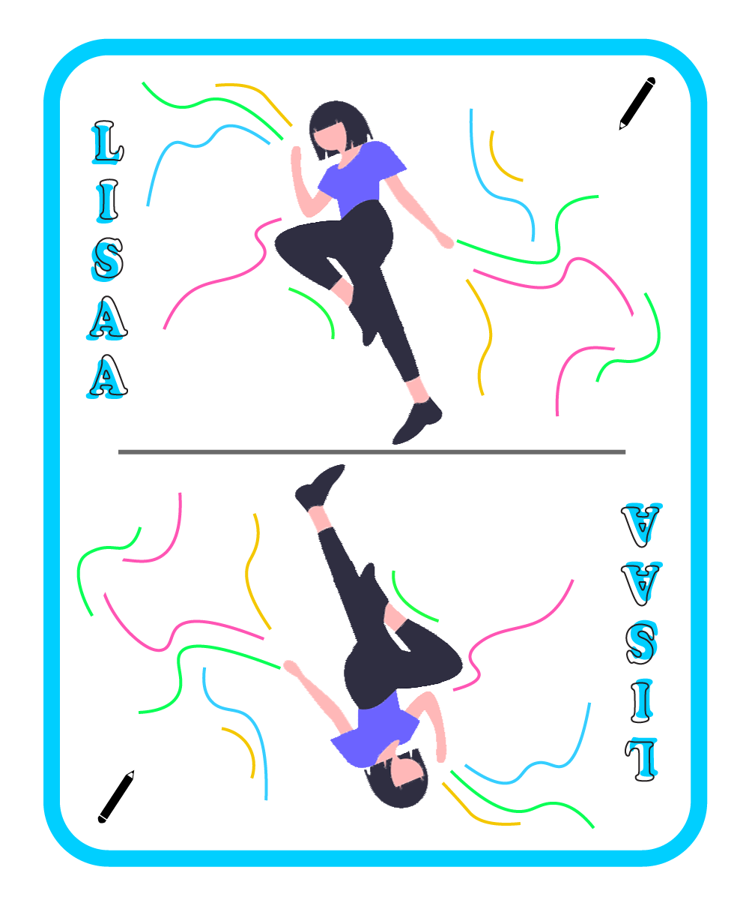
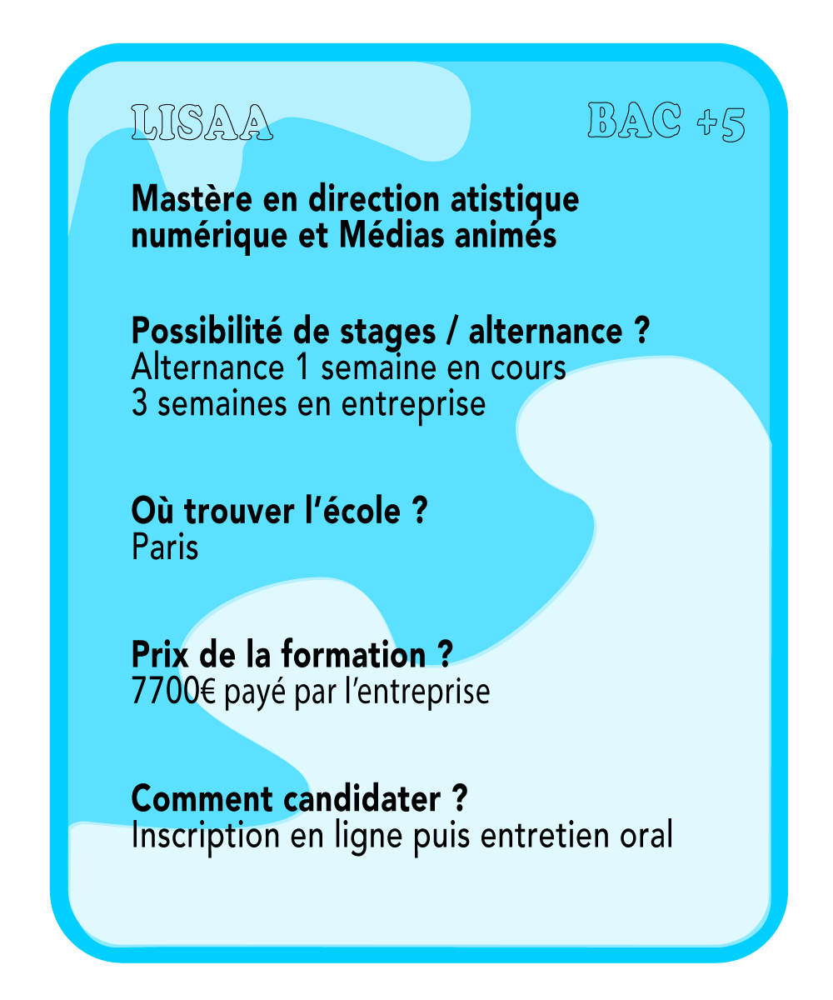

LISAA
Vous êtes désireux de compléter votre cursus avec un master direction artistique numérique/ média animé? En formation initiale, internationale ou en alternance, libre à vous de choisir ce qui vous convient le mieux! Si vous êtes toujours en train de lire, l’école parisienne privée LISAA pourrait bien être celle qu’il vous faut!
Vous y retrouverez des enseignements divers et variés: Projet client, Design d’interfaces, Anglais, Vidéo, Direction artistique, Animations 3D, Gestion d’entreprise,etc.
Afin d’être à l’aise avec ces matières, il est conseillé d’avoir de solides bases en négociation, proposition de solutions graphiques créatives et management d’équipes.
Si cette formation est faite pour vous, rendez vous sur le site de l’école afin de demander un entretien.
Retrouver l'école ici

